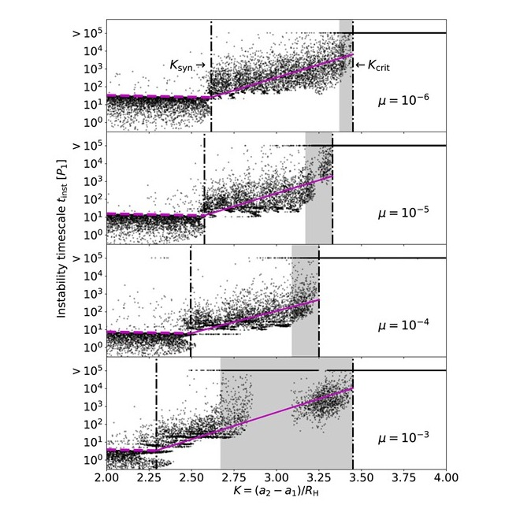
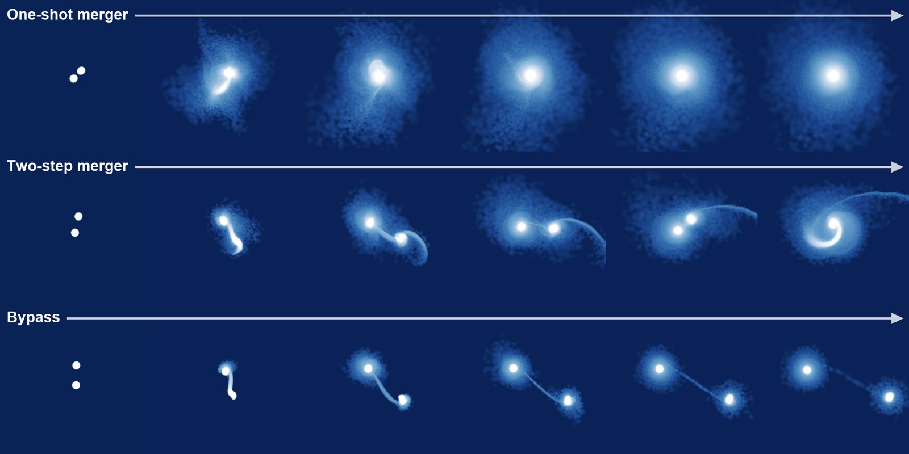
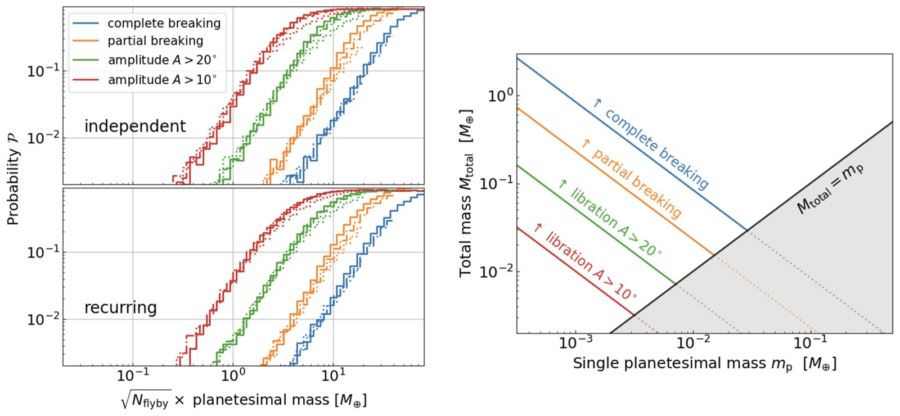
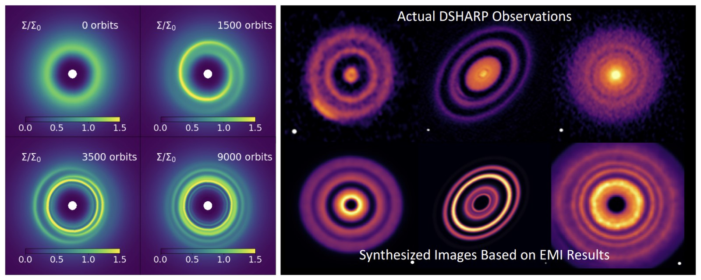
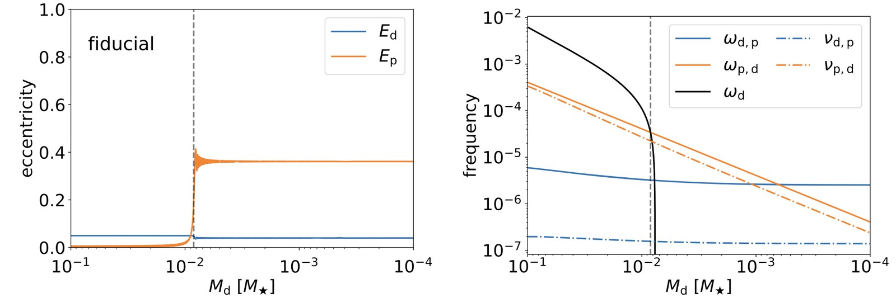
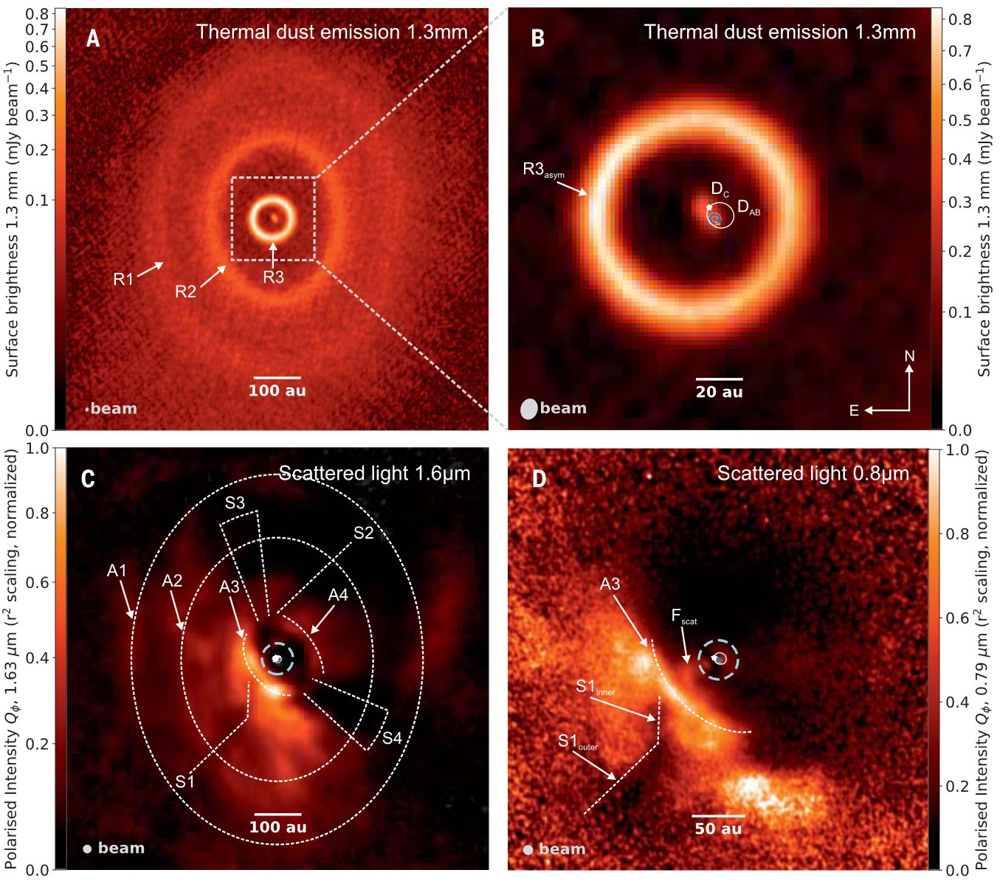
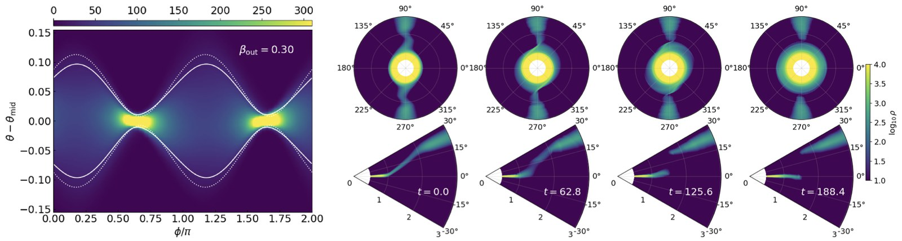
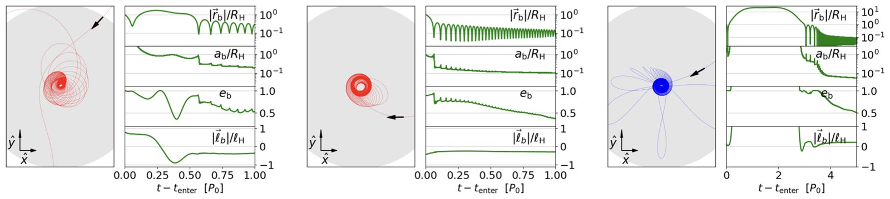
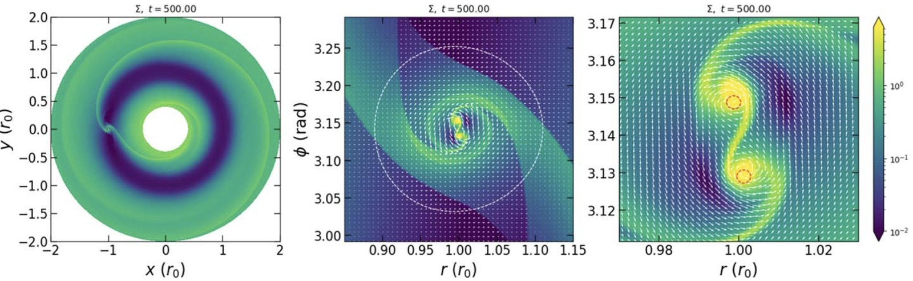
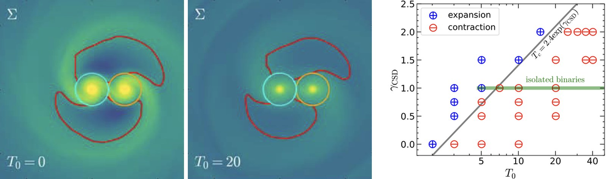

Research
Orbital Dynamics and Disk Hydrodynamics
From young planetary systems to the environments around supermassive black holes, gravity and hydrodynamics shape astrophysical systems across vastly different scales. I study how the two interact to produce the systems we observe, combining analytical theory, N-body integrations, and hydrodynamic simulations.
Figures and movies are from my own work unless noted. Click a figure to enlarge it, or a movie to pause it.
Dynamics of planetary systems
The planets of our Solar System move on nearly circular, well-spaced orbits, but many systems around other stars are far more crowded. Packed too tightly, planets tug on one another until their orbits cross: some collide and merge, while others are flung out of the system altogether. What survives this chaos sets the shape of the planetary systems we see today.
I study both what triggers these instabilities and what they leave behind. Using long-term N-body integrations, I showed how the precise spacing between planetary orbits influences the stability and evolution of tightly packed systems. Hydrodynamic simulations of planetary encounters then allowed me to quantify how fluid effects influence whether an instability ends in a merger or an ejection, as well as the properties of the collision remnants. These mergers, in turn, shape the spins and obliquities of the resulting planets. Together, these studies connect dynamical instability to the orbital and spin properties of observed exoplanets.


More recently, I have asked how planets escape the resonant chains they assemble into during disk-driven migration. Such chains can stay stable far longer than observations of young systems suggest. With Christopher O’Connor and Fred Rasio, I showed that repeated flybys of planetesimals from an outer reservoir can break otherwise stable chains. An injected mass of only ≲ 0.1 M⊕ is enough to trigger instability within ~100 Myr. This is one of the first quantitative mechanisms for breaking resonant chains on the timescales the observations imply.

Related papers: Li, O'Connor & Rasio (2026) · Wang, Li & Lai (2026) · Li, Rodet & Lai (2024) · Li et al. (2021) · Li & Lai (2020)
Protoplanetary disks: eccentricity, rings, and warps
Planets are born inside rotating disks of gas and dust around young stars. These disks are not always neat and round: they can be stretched into ovals, or bent and twisted like a warped vinyl record. Telescopes such as ALMA now image them in remarkable detail, revealing rings, spirals, and warps. I work out which of these shapes a disk can make on its own, and how those shapes in turn steer the planets forming inside it.
Rings in protoplanetary disks are often read as the signature of an unseen planet, but they need not be. I developed the first theory of eccentric disk modes that includes both radiative cooling and disk self-gravity, and found an eccentric-mode instability that amplifies global disk eccentricity. In hydrodynamic simulations, this instability produces rings and spirals with no embedded planet and no external perturbation. Some of the substructures seen by ALMA may therefore come from the disk itself.

Disk eccentricity can also pass to planets. As an eccentric disk disperses, a planet can sweep through a secular resonance where its apsidal precession matches the disk’s, and crossing it strongly excites the planet’s eccentricity. The result is an eccentric planet whose orbit stays well aligned with the stellar spin, a configuration that planet–planet scattering struggles to explain.

Disks are not always flat. When a companion star, an inclined planet, or a spinning black hole pulls on different parts of a disk in different directions, the disk can bend into a warp, with its orientation changing with distance from the centre. Warps appear across astrophysics: from protoplanetary disks, to in X-ray binaries, and to the accretion disks around the supermassive black holes. One of the examples is in the GW Orionis system (shown below), where the disk appears to have been torn into a misaligned inner ring and a warped outer disk.

My current work is on the nonlinear dynamics of warped disks: when does a warped disk stay smooth, and when does it break into misaligned pieces? With Yoram Lithwick, I combine analytical theory, one-dimensional models, and large three-dimensional Athena++ simulations. We find that a radial change in disk inclination can concentrate into a strong local warp. That warp drives extreme vertical compression and expansion (“bouncing”) of the gas and, in some circumstances, breaks the disk.

Related papers: Li & Lithwick · Li & Lai (2023) · Li, Dempsey, Li & Li (2021)
Black holes in AGN disks
At the centres of many galaxies, a supermassive black hole is fed by a vast, swirling disk of gas. Smaller black holes, a few to tens of times the mass of the Sun, can be caught up in that disk, where they drift close to one another and can pair up. When such a pair finally merges, it sends out ripples in spacetime (gravitational waves) that detectors such as LIGO pick up on Earth. I study how these pairs form, and whether the gas around them pushes them toward a merger or drives them apart.
These disks in active galactic nuclei (AGN) are a promising factory for gravitational-wave sources, but how initially unbound black holes actually become binaries there remains poorly understood. I ran the first global hydrodynamic simulations of black-hole encounters in AGN disks and identified a gas-assisted capture mechanism. When two black holes pass close by, the gaseous mini-disks around each of them collide, dissipate orbital energy, and can leave the pair bound. Binaries formed this way can be compact, eccentric, and retrograde. With a student I mentored, I then developed simplified dynamical-friction models of this capture.

A bound binary is only the first step toward a merger, because interactions with the surrounding gas decide whether it hardens or expands. In collaborative hydrodynamic studies (led by Ya-Ping Li), we showed that prograde binaries can expand under positive torques from their circum-single disks, while retrograde binaries tend to shrink. We also showed that the gas thermodynamics matters: heating the circum-single disks weakens those torques and can turn expansion into contraction.


Related papers: Li & Lai (in prep.) · Qian, Li & Lai (2024) · Li et al. (2023) · Li, Lai & Rodet (2022) · Li et al. (2022) · Li et al. (2021)
Earlier work
As an undergraduate at the University of Toronto, I worked with Artur Izmaylov on quantum molecular dynamics. I studied geometric-phase effects in nonadiabatic transitions through a conical intersection, and which parameters of an N-dimensional linear vibronic coupling model suppress them.
Related papers: Li, Joubert-Doriol & Izmaylov (2017) · Izmaylov, Li & Joubert-Doriol (2016)